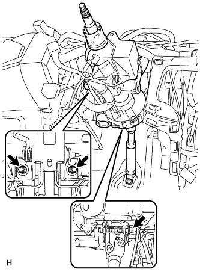
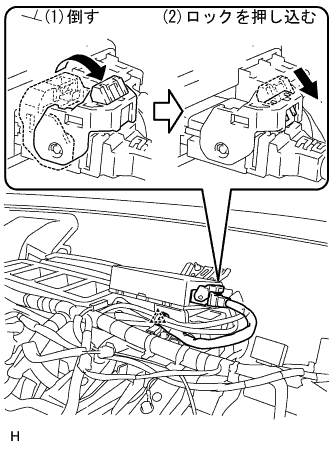
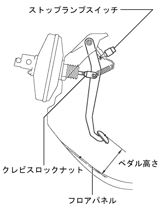

Steering Column Assembly Installation |
| 1. Install Steering Column Assembly w/ Steering Intermediate Shaft Assembly NO.2 |
 |
Install the steering column assembly w/ steering intermediate shaft assembly No.2 with the 2 bolts and nuts.
 |
Connect the connector to the power steering computer assembly.
 |
Connect the connector to the power steering computer assembly.
Attach the wire harness clamp to the power steering computer assembly.
Connect each connector, and attach the wire harness clamps to the steering column assembly bracket.
| 2. Install Stop Light Switch Mounting Adjuster |
 |
Engage the 2 claws and install the stop light mounting adjuster.
| 3. Temporarily Tighten Stop Light Switch Assembly |
 |
Turn the stop light switch assembly clockwise to temporarily install it to the brake pedal support.
| 4. Connect Steering Intermediate Shaft Assembly NO.2 |
 |
Align the matchmarks and connect steering intermediate shaft assembly No.2 to the steering intermediate shaft.
 |
Install the bolt.
| 5. Install Column Hole Cover Silencer Sheet |
 |
Install the column hole cover silencer sheet with the 2 clips.
Put the floor carpet back in place.
| 6. Install Instrument Panel UPR w/ Instrument Panel Passenger Airbag Assembly |
for reference.| 7. Install Turn Signal Switch Assembly w/ Spiral Cable |
 |
With the clamp loosened, install the turn signal switch assembly w/ spiral cable to the steering column assembly.
Engage the claws of the turn signal switch assembly w/ spiral cable with the steering column assembly, and tighten the clamp.
Connect each connector to the turn signal switch assembly w/ spiral cable.
| 8. Install Steering Column Cover |
 |
Engage the 2 claws and pins, and install the steering column cover (upper side).
 |
Engage the 2 claws and install the steering column cover (lower side).
 |
Engage the 4 claws.
 |
Engage the claws.
| 9. Check Front Wheels Straight-ahead Position |
| 10. Center Spiral Cable |
Check that the IG is OFF.
Check that the battery negative terminal is disconnected.
 |
Slowly turn the spiral cable counterclockwise until it locks.
 |
From the locked position, turn the spiral cable back 2.5 turns clockwise and align the matchmarks shown in the illustration.
| 11. Install Steering Wheel Assembly |
 |
Align the matchmarks and install the steering wheel assembly to the steering column assembly.
Install the nut.
Connect each connector to the spiral cable.
| 12. Check Steering Wheel Assembly Center Position |
| 13. Inspect and Adjust Brake Pedal Height |
 |
Inspect brake pedal height
Turn back the carpet.
Turn back the dash silencer from the slit in the dash silencer.
Measure the shortest distance from the brake pedal pad to the dash panel.
Adjust brake pedal height
Disconnect the stop light switch connector.
Loosen the clevis lock nut, and turn the push rod to adjust the pedal height.
Tighten the clevis lock nut.
 |
Insert the stop light switch into the adjuster until the stop light switch contacts the brake pedal.
 |
Turn the stop light switch approximately 1/4 turn clockwise.
Connect the stop light switch connector.
Check the shaft protrusion (amount of projection).
Check that the stop lights do not illuminate when the brake pedal is not depressed.
| 14. Install Instrument Panel Airbag Assembly LWR NO.1 |
for reference.| 15. Install Horn Button Assembly |
for reference.| 16. Torque Sensor 0 Point Calibration and Rotation Angle Sensor Output Calibration |
Perform torque sensor 0 point calibration and rotation angle sensor output calibration (see).